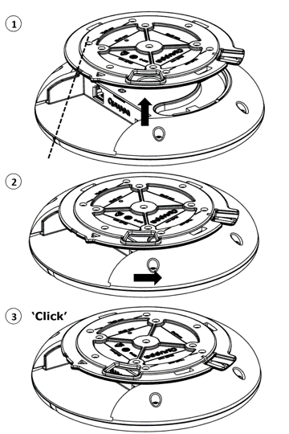

使用Q17定位器
本节包括如何安装Q17定位器、将其连接到电源和网络以及将设备重置为出厂设置等相关信息。
安装
Quuppa Q17的安装方式应该确保其外壳侧面或前面没有任何金属障碍物（如空调管道、大型天花板架、建筑上部结构）。如有需要，请使用刚性导管将Quuppa Q17降至远离这些障碍物的地方。
- 将安装支架安装到天花板上
安装从安装支架开始。安装支架有几个用于安装螺钉的孔。至少使用4个螺钉来确保稳定的安装。推荐的方式为VESA标准75mm x 50mm或50mm x 50mm安装方式；具体已在安装支架上注明。
如果需要隐藏电缆，可通过支架上的电缆通道布设以太网电缆。安装支架上的方向指示器和方向指南可用于根据环境中的已定义方向对齐Quuppa Q17
CAUTION: 切勿将安装支架连接或安装到热表面。安装前，请务必确保表面能够承载设备的重量。不遵循一般安全规定可能会损坏物件或伤害人员。必须由合格的人员负责Quuppa Q17设备的安装。
- 将Quuppa Q17主机安装到安装支架上

- 如果使用了以太网电缆和微型USB电缆，则连接这些电缆。
- 您可以使用连接器盖保护连接器区域免受灰尘和污垢的影响。
- 请确保安装支架中的安装导轨与Quuppa Q17主机上的指示灯对齐，从而将Quuppa Q17主机与支架对齐 (1)。
- 提起Quuppa Q17主机，使支架进入支架安装通道 (1)。
- 旋转Quuppa Q17主机(2)，直到听到"咔嗒"声(3)。
电源连接
选项1：使用以太网供电（PoE）
Quuppa Q17支持使用标准IEEE 802.3at 1型PoE组件（以太网供电交换机或以太网电源供电器）作为其电源。仅使用经过标准认证的PoE设备。使用PoE时，不需要单独的直流电源。
选项2：使用单独的5V直流微型USB
如果未使用PoE组件，请将Quuppa Q17连接到带有微型USB的5V电源。仅使用兼容的电源。如果不确定兼容电源，请联系Quuppa。
连接电源后，Quuppa Q17会自动开启。红色指示灯闪烁多次，之后红灯将持续亮起，直到Quuppa Q17连接到Quuppa定位引擎。
网络连接
使用RJ-45以太网插座的以太网电缆将Quuppa Q17连接到网络。使用Quuppa Q17设备时，可以选择屏蔽或非屏蔽以太网电缆。为了您的安全，并防止Quuppa Q17受到任何损坏，请仅将Quuppa Q17连接到标准认证的网络组件。
当Quuppa Q17正常连接网络，但尚未由Quuppa定位引擎软件激活时，红色指示灯会缓慢闪烁。当Quuppa Q17被Quuppa定位引擎软件激活时，蓝色指示灯闪烁或持续亮起。
重置为出厂设置
如需将定位器复位到出厂设置，当定位器连接到电源时，使用一个小别针长按复位按钮。当指示灯转为绿色时，继续按住复位按钮，当指示灯变为红色时才松开复位按钮。当您松开复位按钮时，定位器将重启，如指示灯红、绿、蓝闪烁顺序所指示。